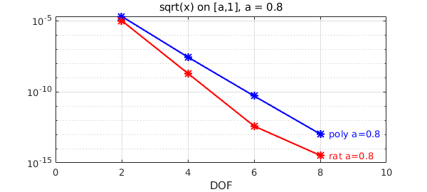
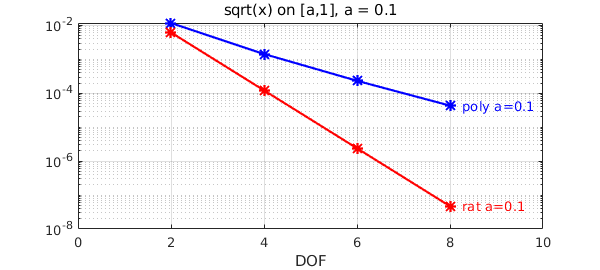
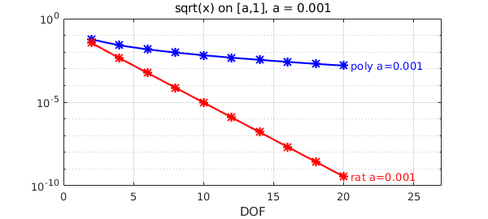
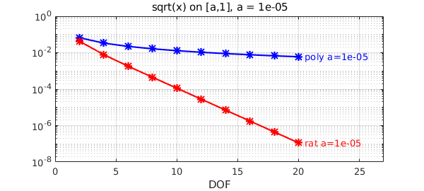
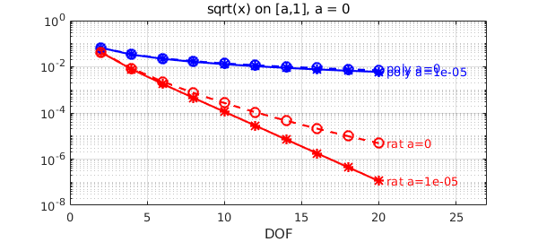
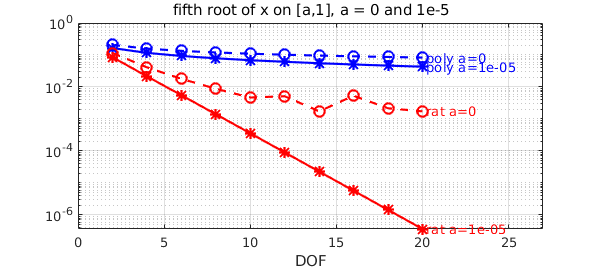

Rational functions outperform polynomials for approximating functions with (near-)singularities. The absolute value function is a typical example, for which polynomials converge only algebraically $O(1/n)$ whereas rationals root-exponentially $O(\exp(-\pi\sqrt{n}))$.
A closely related function is the square root. When we work on the interval $[a,1]$ for $0<a<1$, $\sqrt{x}$ is analytic on the interval, so both polynomials and rational functions would converge exponentially. Indeed for $a$ close to $1$ we don't see much difference. We compute the best polynomial and rational approximants using minimax.
a = 0.8;
x = chebfun('x',[a 1]); f = sqrt(x);
ns = 2:2:8;
perrs = []; rerrs = [];
for n = ns
[p,perr] = minimax(f,n);
perrs = [perrs perr];
[p,q,r,rerr] = minimax(f,n/2,n/2);
rerrs = [rerrs rerr];
end
semilogy(ns,perrs,'b*-'), hold on
text(ns(end)+.25,perrs(end),['poly a=',num2str(a)],'color','b')
semilogy(ns,rerrs,'r*-'), grid on
text(ns(end)+.25,rerrs(end),['rat a=',num2str(a)],'color','r')
xlim([0 ns(end)+2]), title(['sqrt(x) on [a,1], a = ',num2str(a)])
xlabel DOF

As we shrink $a$, the difference in convergence gets pronounced. While the convergence is still exponential in all cases, polynomials struggle more as $a\rightarrow 0$ as the singularity gets closer to the domain. Let's vary the value of $a$. We first take $a=0.1$:
a = 0.1; x = chebfun('x',[a 1]); f = sqrt(x);
perrs = []; rerrs = [];
for n = ns
[p,perr] = minimax(f,n);
perrs = [perrs perr];
[p,q,r,rerr] = minimax(f,n/2,n/2);
rerrs = [rerrs rerr];
end
hold off, semilogy(ns,perrs,'b*-'), hold on
text(ns(end)+.25,perrs(end),['poly a=',num2str(a)],'color','b')
semilogy(ns,rerrs,'r*-'), grid on
text(ns(end)+.25,rerrs(end),['rat a=',num2str(a)],'color','r')
xlim([0 ns(end)+2]), title(['sqrt(x) on [a,1], a = ',num2str(a)]), xlabel DOF

Now $a=10^{-3}$:
a = 1e-3; f = chebfun(@(x)sqrt(x),[a,1]); ns = 2:2:20; perrs = []; rerrs = []; for n = ns [p,perr] = minimax(f,n); perrs = [perrs perr]; [p,q,r,rerr] = minimax(f,n/2,n/2,'silent'); rerrs = [rerrs rerr]; end hold off, semilogy(ns,perrs,'b*-'), hold on text(ns(end)+.5,perrs(end),['poly a=',num2str(a)],'color','b') semilogy(ns,rerrs,'r*-'), grid on text(ns(end)+.5,rerrs(end),['rat a=',num2str(a)],'color','r') xlim([0 ns(end)+7]), title(['sqrt(x) on [a,1], a = ',num2str(a)]), xlabel DOF

Finally, $a=10^{-5}$:
a = 1e-5; f = chebfun(@(x)sqrt(x),[a,1],'splitting','on'); ns = 2:2:20; perrs = []; rerrs = []; for n = ns [p,perr] = minimax(f,n); perrs = [perrs perr]; [p,q,r,rerr] = minimax(f,n/2,n/2,'silent'); rerrs = [rerrs rerr]; end hold off, semilogy(ns,perrs,'b*-'), hold on text(ns(end)+.5,perrs(end),['poly a=',num2str(a)],'color','b') semilogy(ns,rerrs,'r*-'), grid on text(ns(end)+.5,rerrs(end),['rat a=',num2str(a)],'color','r') xlim([0 ns(end)+7]), title(['sqrt(x) on [a,1], a = ',num2str(a)]), xlabel DOF
Warning: minimax algorithm did not converge after 14 iterations to the tolerance 0.0001.

We see that the difference is widening: both errors increase as $a\rightarrow 0$, but polynomials suffer much more.
We now superimpose the plot with $a=0$, taking the whole interval $[0,1]$. We recover the algebraic (poly) and root-exponential (rat) convergence as opposed to exponential (admittedly rational-minimax struggles a bit here: please note that this is a very hard problem!).
a = 0; f = chebfun(@(x)sqrt(x),[a,1],'splitting','on'); ns = 2:2:20; perrs = []; rerrs = []; for n = ns [p,perr] = minimax(f,n); perrs = [perrs perr]; [p,q,r,rerr] = minimax(f,n/2,n/2,'silent'); rerrs = [rerrs rerr]; end semilogy(ns,perrs,'bo--') text(ns(end)+.5,perrs(end)*1.3,['poly a=',num2str(a)],'color','b') semilogy(ns,rerrs,'ro--'), grid on text(ns(end)+.5,rerrs(end),['rat a=',num2str(a)],'color','r') xlim([0 ns(end)+7]), title(['sqrt(x) on [a,1], a = ',num2str(a)]), xlabel DOF
Warning: minimax algorithm did not converge after 13 iterations to the tolerance 0.0001. Warning: minimax algorithm did not converge after 14 iterations to the tolerance 0.0001.

Let's now do the same experiment with the pth root, with $p=5$. The situation qualitatively the same (regardless of $p$).
hold off
as = [1e-5 0];
ns = 2:2:20;
pstyle = {'b*-','bo--'}; rstyle = {'r*-','ro--'};
it = 0;
for a = as
it = it+1; perrs = []; rerrs = [];
f = chebfun(@(x)x.^(1/5),[a,1],'splitting','on');
for n = ns
[p,perr] = minimax(f,n);
perrs = [perrs perr];
end
for n = ns
[p,q,r,rerr] = minimax(f,n/2,n/2,'silent');
rerrs = [rerrs rerr];
end
semilogy(ns,perrs,pstyle{it}), hold on
text(ns(end)+.2,perrs(end),['poly a=',num2str(a)],'color','b')
semilogy(ns,rerrs,rstyle{it}), grid on
text(ns(end)+.2,rerrs(end),['rat a=',num2str(a)],'color','r')
xlim([0 ns(end)+7]), xlabel DOF
title(['fifth root of x on [a,1], a = 0 and 1e-5'])
end
Warning: minimax algorithm did not converge after 13 iterations to the tolerance 0.0001. Warning: minimax algorithm did not converge after 13 iterations to the tolerance 0.0001. Warning: minimax algorithm did not converge after 14 iterations to the tolerance 0.0001. Warning: Matrix is close to singular or badly scaled. Results may be inaccurate. RCOND = 5.394767e-18. Warning: Matrix is close to singular or badly scaled. Results may be inaccurate. RCOND = 5.394767e-18. Warning: minimax algorithm did not converge after 14 iterations to the tolerance 0.0001. Warning: Matrix is close to singular or badly scaled. Results may be inaccurate. RCOND = 8.957728e-18. Warning: Matrix is close to singular or badly scaled. Results may be inaccurate. RCOND = 8.957728e-18. Warning: Matrix is close to singular or badly scaled. Results may be inaccurate. RCOND = 7.928782e-20. Warning: Matrix is close to singular or badly scaled. Results may be inaccurate. RCOND = 7.928782e-20. Warning: Matrix is close to singular or badly scaled. Results may be inaccurate. RCOND = 2.395916e-21. Warning: Matrix is close to singular or badly scaled. Results may be inaccurate. RCOND = 2.395916e-21. Warning: Matrix is close to singular or badly scaled. Results may be inaccurate. RCOND = 1.380810e-21. Warning: Matrix is close to singular or badly scaled. Results may be inaccurate. RCOND = 1.380810e-21. Warning: minimax algorithm did not converge after 15 iterations to the tolerance 0.0001. Warning: Matrix is close to singular or badly scaled. Results may be inaccurate. RCOND = 4.768615e-18. Warning: Matrix is close to singular or badly scaled. Results may be inaccurate. RCOND = 4.768615e-18. Warning: Matrix is close to singular or badly scaled. Results may be inaccurate. RCOND = 4.824766e-20. Warning: Matrix is close to singular or badly scaled. Results may be inaccurate. RCOND = 4.824766e-20. Warning: Matrix is close to singular or badly scaled. Results may be inaccurate. RCOND = 4.340280e-22. Warning: Matrix is close to singular or badly scaled. Results may be inaccurate. RCOND = 4.340280e-22. Warning: Matrix is close to singular or badly scaled. Results may be inaccurate. RCOND = 4.392021e-24. Warning: Matrix is close to singular or badly scaled. Results may be inaccurate. RCOND = 4.392021e-24. Warning: minimax algorithm did not converge after 15 iterations to the tolerance 0.0001.
